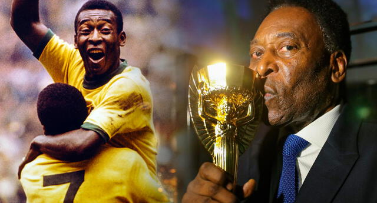
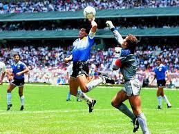
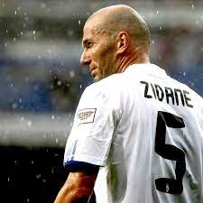
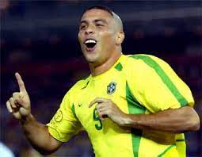
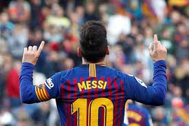

A lo largo del tiempo, surgieron varios jugadores destacados en el fútbol, es por eso que veremos cronológicamente a estas 10 leyendas del fútbol
Ferenc Purczeld Biró, nació en Budapest, el 2 de abril de 1927 fue un integrante de los equipos Budapesti Honvéd Sport Egyesület y Real Madrid siendo en este último al que debe sus mayores éxitos, es considerado como uno de los mejores futbolistas de la historia según la UEFA y la FIFA, tuvo 85 partidos con la selección húngara conocida como el "Equipo de oro", Ocupó el sexto lugar en el "Mejor Futbolista del Siglo" publicada por la IFFHS en 2004, Es por eso que desde el 2009 la FIFA otorgue el Premio Puskás en su honor
Lev Ivánovich Yashin, nació en Moscú, el 22 de octubre de 1990, más conocido como la "Araña Negra", fue un futbolista soviético, conocido como el mejor portero en la historia del deporte, es el primer y único guardameta hasta ahora que ha conseguido el Balón de Oro, fue un portero completo, gran estatura y ágil, con su selección ganó la Eurocopa en 1960

Edson Arantes do Nascimento, nació en Três Corações, Minas Gerais el 23 de octubre de 1940 más conocido como Pelé, fue un futbolista brasileño que jugó como delantero, apodado O Rei, es reconocido por varios como uno de los mejores futbolistas de todos los tiempos, siendo descrito por la FIFA como "El más grande de todos", se retiró del fútbol en 1977. Sus 1279 goles en 1363 partidos, son reconocidos como un Récord Mundial Guinness
Franz Anton Albert Beckenbauer, nació en Alemania, el 11 de septiembre de 1945, apodado El Káiser, exfutbolista y exdirector técnico. Actualmente se desempeña como presidente del Bayern de Múnich. Es conocido como uno de los mejores futbolistas de todos los tiempos al ganar 2 Balones de Oro siendo el primer defensa en lograr esta hazaña, si bien destacaba como mediocampista, se adaptó a diferentes posiciones en el campo de juego

Hendrik Johannes Cruijff, nació en Ámsterdam, el 25 de abril de 1947, fue un jugador y entrenador del fútbol neerlandés, es considerado por la IFFHS como el mejor jugador de Europa en el siglo XX. Militó 10 temporadas en el primer equipo del Ajax de Ámsterdam. Luego fichó por el F.C.Barcelona del que se marcharía en 1978, llevó a los Países Bajos a la final de la UEFA y la Copa Mundial de la FIFA de 1974, y recibió el Balón de Oro como jugador del torneo
Diego Armando Maradona, nació en Argentina, el 30 de octubre de 1960 fue un futbolista y entrenador argentino. Se desempeñó como mediocampista ofensivo y delantero, y es reconocido como uno de los mejores futbolistas de la historia. Asimismo, ha sido catalogado como el "Mejor jugador de la Copa Mundial", aparte de su conocido gol de la "Mano de Dios" en el partido de primera fase de la Copa Mundial de Fútbol de 1990 entre Argentina y la Unión Soviética
Zinédine Yazid Zidane, nació en Francia el 23 de junio de 1972, es un exfutbolista y entrenador francés, es agente libre desde julio de 2021 tras dejar el Real Madrid C.F. Como centrocampista ofensivo, es considerado uno de los mejores jugadores de su generación, así como uno de los mejores futbolistas de todos los tiempos, obteniendo el Balón de Oro en 1998, fue parte del Real Madrid en el Madrid de los Galácticos junto a Luis Figo, Ronaldo Nazario y David Beckham
Ronaldo Luis Nazário de Lima, nació en Brasil, el 18 de septiembre de 1976 es un exfutbolista brasileño y jugador histórico del fútbol europeo, conocido como "O fenômeno", es considerado por muchos como el mejor delantero central de la historia del fútbol, en 1997, el Inter de Milán rompió el récord de la transferencia más cara de la historia hasta el momento, a los 21 años recibió el Balón de Oro. En agosto de 2002, el Real Madrid anunció la compra del delantero, su último club europeo fue el AC Milan
Cristiano Ronaldo dos Santos Aveiro, nació en Funchal-Portugal, el 5 de febrero de 1985, mas conocido como Cristiano Ronaldo, juega como EI y delantero, su equipo actual es el Al-Nassr F.C. Juega internacionalmente con la selección de Portugal de el cual es capitán y máximo goleador histórico, es considerado con frecuencia el mejor jugador del mundo y más completo futbolista, además de uno de los mejores de todos los tiempos, en algunas distinciones, ganó cinco veces el Balón de Oro, y cuatro Botas de Oro, es también conocido con el numerónimo CR7, con834 goles, es el máximo goleador en la historia del fútbol profesional y con 450, el máximo goleador del Real Madrid, consiguiéndolo en las nueve temporadas que jugó en el club.
Lionel Andrés Messi Cuccittini, nació en Rosario, el 24 de junio de 1987, conocido como Leo Messi, juega como delantero o centrocampista. Jugador histórico del F.C.Barcelona, en el que estuvo 20 años, desde el 2021 está en la plantilla del Paris Saint-Germain (PSG). Juega internacionalmente con la selección de Argentina, en el cual es capitán, también considerado con frecuencia el mejor jugador del mundo y uno de los mejores de todos los tiempos, es el único futbolista que ha ganado, siete veces el Balón de Oro, seis Botas de Oro y dos Balones de Oro de la Copa Mundial de Fútbol. Con el Barcelona ha ganado 35 títulos, entre ellos, diez de La Liga, cuatro de Liga de Campeones de la UEFA y siete de la Copa del Rey. Es el máximo goleador histórico del Barcelona y de la selección de Argentina, de La Liga, Supercopa de España y el jugador no europeo con más goles en la Liga de Campeones de la UEFA
